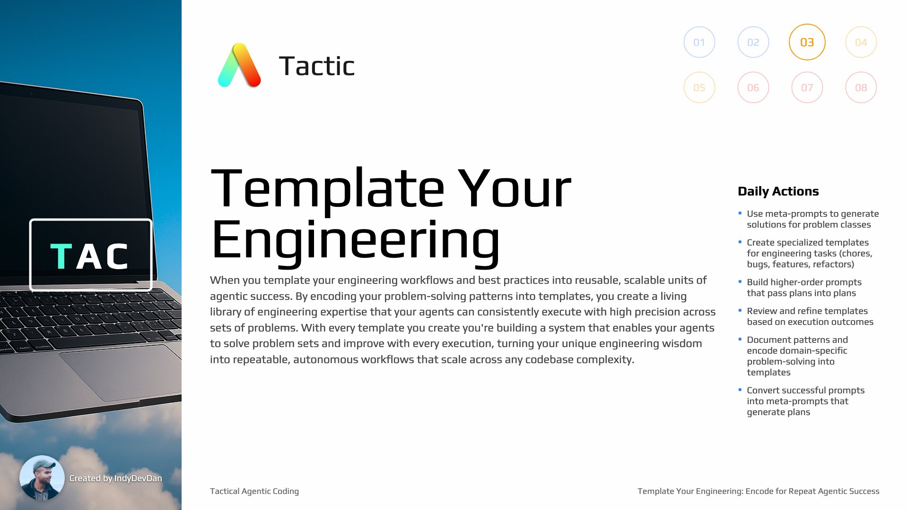

Success is Planned: The 80-20 of Agentic Coding
Lesson #3 (Intermediate)
First came prompts, then came plans and what comes next will push your ability to hand off work to your agents even further beyond. Learn a powerful leverage point of agentic coding that enables your agents to ship with you and your team's engineering best practices.
Loot Box
Useful links, documentation, and tips for your ai coding experience. Unlock new resources as you progress through the lesson.
The Prompt is Everything
What was once a complete joke is now the most valuable skill any engineer can have. The prompt is the medium through which you communicate to your agentic tools and all generative AI technology.
Plans Are Scaled Prompts
A scaled prompt is a plan, a specification, a PRD. Plans are prompts scaled up for high impact. Great planning is great prompting - they are one and the same.
Success is Planned
Those who plan the future tend to create it. Success is planned. In this lesson, we enter the plan and build phase of the agentic software developer lifecycle.
The 80-20 of Agentic Coding
With just three tactics (Stop Coding, Adopt Agent's Perspective, Template Your Engineering), you'll learn the Pareto 80-20 of agentic engineering. These fundamentals deliver 80% of the impact with 20% of the complexity.
Tactic #3: Template Your Engineering
When you template your engineering, you encode your engineering workflows and best practices into reusable, scalable units of agentic success. By encoding your problem-solving patterns into templates, you create a living library of engineering expertise that your agents can consistently execute with high precision across sets of problems.

Solving Problem Classes, Not Problems
Templates enable you to solve entire classes of problems, not just individual problems. Create templates for chores, bugs, features, and refactors that work consistently across any codebase.
Templates for Team Leverage
Templates create leverage not just for you, but for your entire team. Your engineering expertise becomes a shared resource that everyone can access, use, and improve.
Planning Alone is Expensive
Planning is time consuming and there's always something to miss. The time planning consumes scales with the difficulty of the problem and the size and complexity of your codebase. Templates solve this problem.
Templates Encode Problem Solving
Templates let us encode problem solving into reusable units that work on small to large codebases. They can handle chores, bugs, small features, large features, new codebases, all the way up to massive refactors.
TAC Lesson 3 - Success is Planned Repository
git clone https://github_pat_11ABZYK6Y0i...vc@github.com/disler/tac-3.gitReusable Prompts as Time Savers
Reusable prompts and templates are extremely powerful time savers due to how reusable they are - not just for you, but for your entire team. They encode engineering expertise once, execute infinitely.
Chore Template Command
/chore "your chore description"Meta-Prompts: Prompts That Build Prompts
A meta-prompt is a prompt that builds a prompt. This agentic prompt builds a plan based on a template that your agent fills out. This is extremely powerful - not only should we stop coding, we should also leverage our agents to write plans with us and for us.
Plans Written to Specs Directory
All generated plans are written to the specs directory. These plans contain chore descriptions, relevant files, step-by-step tasks, validation commands, and implementation notes.
Built-in Validation Commands
Every plan includes validation commands that verify the work was completed successfully. This creates a closed-loop system where agents can self-validate their implementations.
From One Line to Comprehensive Plan
With templates, you write one high-level sentence and get an entire comprehensive plan. This scales your impact exponentially - turning simple ideas into detailed, executable specifications.
Anatomy of a Template
Every great template contains: Purpose at the top, detailed instructions, relevant files to guide success, plan format in markdown, and a parameter that accepts your high-level description.
Now We Can Template Our Engineering
By using meta-prompts and templates, we can now template our engineering. This fundamentally changes your engineering impact by encoding problem-solving patterns into reusable units.
Implement Plan Command
/implement specs/your-plan.mdActivating Reasoning with "Think Hard"
The "think hard" instruction activates Claude Code's reasoning model. This is one of the 12 leverage points of agentic coding - turning on the reasoning model for complex problem solving.
Higher-Order Prompts (HOPs)
A Higher-Order Prompt accepts another prompt as input. When you pass a plan into the implement command, you're using a HOP - plans getting passed into plans. This enables powerful prompt composition.
Aligning Plans with Agent Capabilities
We're leveraging our plan and aligning it with the capabilities of our agent. The to-do list created by the agent lines up perfectly with the step-by-step breakdown in our plan.